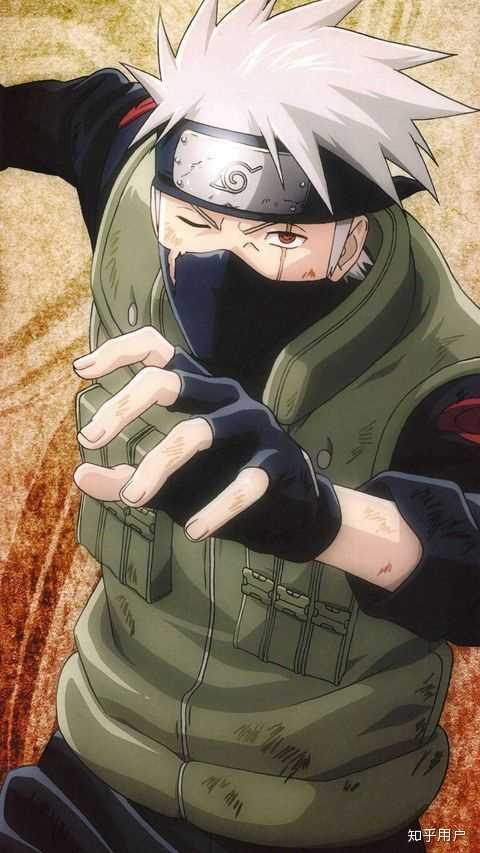

一、天才童年（木叶神童）
父亲是 “木叶白牙” 旗木朔茂，实力显赫。
5 岁从忍者学校毕业；6 岁升中忍；12 岁成为上忍，创下木叶纪录。
少年冷酷理性、严守规则，因父亲救人放弃任务遭舆论逼死，留下心理阴影。
二、神无毗桥：命运转折（第三次忍界大战）
水门班（波风水门、卡卡西、带土、琳）执行炸桥任务。
卡卡西为救带土失去左眼；带土被巨石压毁右半身，临终赠卡卡西左眼写轮眼。
带土遗言：“不珍惜同伴的人，连废物都不如”，彻底改变卡卡西信念。
后续卡卡西被迫杀死被操控的琳，陷入长期孤独与自责。
三、拷贝忍者：写轮眼时代
左眼写轮眼让他复制上千忍术，得名 “拷贝忍者卡卡西”。
自创 A 级忍术千鸟（雷切），速度与杀伤力极强。
成为第七班导师（鸣人、佐助、小樱），引导三人成长。
佩恩之战为护村牺牲，后被长门轮回天生复活。
四、双神威：巅峰时刻（第四次忍界大战）
战中被斑夺走写轮眼，左眼被鸣人用阴阳遁复原。
最终战，带土灵魂归来，将双眼万花筒写轮眼借给卡卡西，短暂开启双神威完全体须佐能乎。
能力：
神威：空间转移，可将物体 / 忍术吸入异空间。
神威手里剑：斩断辉夜手臂。
须佐能乎・神威雷切：攻防一体，战力达六道级。
与第七班联手封印大筒木辉夜，拯救忍界。
五、六代火影：传承与归宿
战后卸写轮眼，开发无眼忍术紫电，证明自身实力。
继任六代目火影，稳健治理木叶，守护和平。
晚年卸任，与迈特凯周游世界，追忆过往。
六、人物信条
“违反规则的人是废物，但不珍惜同伴的人，连废物都不如。”